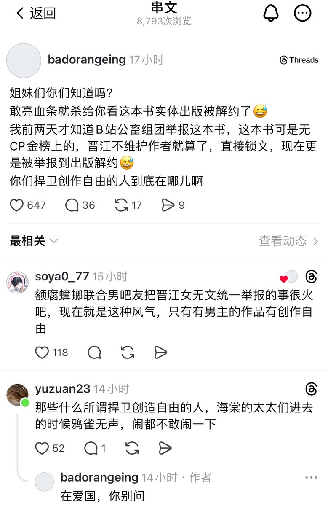

f hv
@fhv932189957574
@Asahibozi @fs1fdjgmF54003 是的孩子们按闹分配真管用，不知道这本书的看帖子

便衣道士
@Asahibozi
孩子们，按闹分配真的有用 https://t.co/zXmu4baXhy
不死女巫（追星驴破防版
@imyourkillerman
时代峰峻那个事儿还没给追星驴看明白吗？
老钟经济越来越差低质量精子追出来的智障男宝数量那么庞大
公开反女是迟早的事 没想到这么快就拿追星驴开刀了
可见性别比不平衡到什么程度了 我以为10年后才会有这种事发生